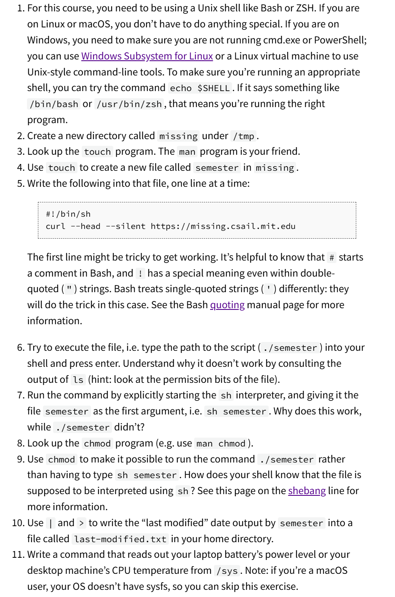
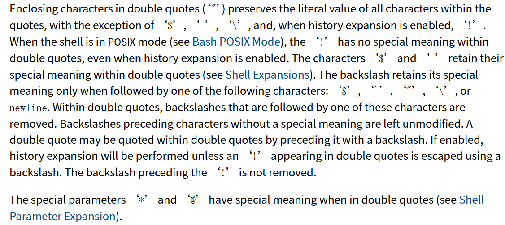
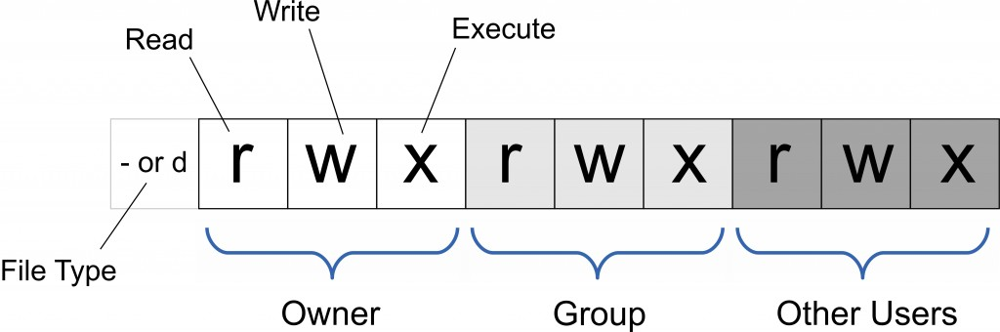

Overview and Shell¶
约 4604 个字 111 行代码 3 张图片 预计阅读时间 17 分钟
什么是终端和shell
终端（Terminal）是用户与计算机系统交互的界面。它可以是一个物理设备，如早期的计算机终端，也可以是一个软件应用程序，如现代操作系统中的终端仿真器。通过终端，用户可以输入命令并查看计算机的输出。终端通常用于执行命令行操作，进行文件管理、系统配置和程序运行等任务。
Shell 是一种命令行解释器，它提供了一个用户与操作系统内核交互的界面。用户在终端中输入的命令会被 Shell 解释并传递给操作系统执行。Shell 还提供了编程功能，如变量、控制结构和脚本编写，使用户能够编写复杂的自动化任务。
常见的 Shell 包括：
- Bash（Bourne Again Shell）：大多数 Linux 发行版的默认 Shell。
- Zsh（Z Shell）：功能强大且可定制的 Shell，近年来越来越受欢迎。
- Fish（Friendly Interactive Shell）：用户友好的 Shell，提供了许多现代特性。
Shell 是用户与操作系统之间的重要桥梁，通过它，用户可以高效地管理和控制计算机系统。
如果某些命令不记得了，可以使用man命令查看帮助文档，或者安装tldr命令查看简化的帮助文档
echo 命令¶
echo 命令用于在终端中显示一段文本或变量的值。它是一个非常基础且常用的命令，常用于脚本编写和调试。
基本语法：
常用选项：
- -n：不在输出的末尾添加换行符。
- -e：启用反斜杠转义字符的解释。
示例：
输出：
使用 -n 选项：
输出：
使用 -e 选项：
输出：
参数之间使用空格分开
环境变量(PATH)¶
环境变量是操作系统中用于存储系统设置和配置信息的变量。它们在操作系统和应用程序之间传递信息，控制程序的行为和运行环境。环境变量通常以键值对的形式存在，每个变量都有一个名称和一个对应的值。
更通俗的说，当我们在终端里面输入命令时, 操作系统会根据 PATH 变量中定义的目录顺序搜索该命令对应的可执行文件，如果可以找到，则执行该文件。
要想输出自己的环境变量，可以使用 echo 命令，例如：
会返回绝对路径
路径
绝对路径就是完全确定文件位置的路径
相对路径是相对于当前工作目录的路径
. 表示当前目录
.. 表示上一级目录
~ 表示当前用户的主目录
输入 pwd 可以查看当前工作目录
输入 ls 可以查看当前目录下的文件
输入 cd 可以切换目录(cd 目录名)
在Linux中，路径通常以 / 开头，表示根目录。
在windows中，路径通常以 盘符:\ 开头。
因为在windows中每一个盘都代表一个文件系统，所以我们经常会看到 C:\ 这样的路径。\
例如
graph TD;
C("C:\\") --> ProgramFiles("C:\\Program Files");
C("C:\\") --> Users("C:\\Users");
C("C:\\") --> Windows("C:\\Windows");
D("D:\\") --> Documents("D:\\Documents");
D("D:\\") --> Downloads("D:\\Downloads");
E("E:\\") --> Music("E:\\Music");
E("E:\\") --> Videos("E:\\Videos");
F("F:\\") --> Backup("F:\\Backup");
F("F:\\") --> Projects("F:\\Projects");而在Linux中，文件结构是树状的，所以路径通常以 / 开头，表示根目录。
graph TD;
root("/") --> bin("/bin");
root("/") --> boot("/boot");
root("/") --> dev("/dev");
root("/") --> etc("/etc");
root("/") --> home("/home");
root("/") --> lib("/lib");
root("/") --> media("/media");
root("/") --> mnt("/mnt");
root("/") --> opt("/opt");
root("/") --> proc("/proc");
root("/") --> run("/run");
root("/") --> sbin("/sbin");
root("/") --> srv("/srv");
root("/") --> sys("/sys");
root("/") --> tmp("/tmp");
root("/") --> usr("/usr");
root("/") --> var("/var");如果想知道某条命令具体在哪个目录下，可以使用 which 命令，例如：
cd¶
cd 命令是一个用于在终端中更改当前工作目录的命令。它是 "change directory" 的缩写。使用 cd 命令，用户可以在文件系统中导航到不同的目录。
- 如果不带参数，
cd会将当前目录更改为用户的主目录。 - 使用
cd ..可以返回到上一级目录。 - 使用
cd -可以返回到上一个工作目录。
一些常见的用法有
这将把当前工作目录更改为 /path/to/directory。
这将把当前工作目录更改为上一级目录的上一级目录的指定目录。
这将把当前工作目录更改为当前目录的指定目录
- 路径可以是绝对路径或相对路径。
- 在 Linux 和 macOS 中，路径区分大小写。
- 使用
pwd命令可以查看当前工作目录。
通过 cd 命令，用户可以方便地在文件系统中导航，执行文件管理和其他操作。
ls¶
ls 命令是一个用于列出目录内容的命令。它是 "list" 的缩写。使用 ls 命令，用户可以查看指定目录下的文件和子目录。
folder vs directory
directory 是目录, 是文件系统中的一个概念, 而 folder 是文件夹, 是图形化界面中的一个概念，folder 不一定是directory，除非它存在于文件系统中，directory 也不一定显示为是 folder，只有它在GUI环境下才是
使用ls --help可以查看ls命令的帮助文档
常用的参数有
-a：显示所有文件和目录，包括隐藏文件（以.开头的文件,即隐藏文件 ）。
-l：以长格式显示文件和目录。
例如在本人的~目录下输入ls -l会返回
total 15596
-rw-r--r-- 1 kailoveq kailoveq 787 Dec 24 2023 1.txt
-rw-r--r-- 1 kailoveq kailoveq 334 Jul 4 2024 Kailqq.txt
drwxr-xr-x 3 kailoveq kailoveq 4096 Sep 2 11:07 MASM
drwxr-xr-x 7 kailoveq kailoveq 4096 Feb 27 2024 autojump
-rw-r--r-- 1 kailoveq kailoveq 2634817 Feb 2 2024 get-pip.py
-rw-r--r-- 1 kailoveq kailoveq 6140 Nov 12 2015 mysql-community-release-el7-5.noarch.rpm
drwxr-xr-x 10 kailoveq kailoveq 4096 Jan 17 23:54 node_modules
drwxr-xr-x 2 kailoveq kailoveq 4096 Jan 21 2024 ok
-rw-r--r-- 1 kailoveq kailoveq 3843 Jan 17 23:58 package-lock.json
-rw-r--r-- 1 kailoveq kailoveq 152 Jan 17 23:58 package.json
-rw-r--r-- 1 kailoveq kailoveq 0 Feb 20 2024 selected
drwx------ 4 kailoveq kailoveq 4096 Jan 24 14:25 snap
drwxr-xr-x 4 kailoveq kailoveq 4096 May 18 2024 texmf
total 15596，表示该目录下有15596个文件和子目录。
然后看包含-的行，如果前面有d，表示该文件是一个目录，如果前面是-，表示这是一个文件
除第一个外，还剩下九个位置,每三个位置为一组，分别表示对应的权限
前三位表示文件所有者的权限，中间三位表示文件所有者所在组的权限，最后三位表示其他人的权限
例如对于texmf,前三位为rwx，表示文件所有者有读、写、执行的权限，中间三位为r-x，表示文件所有者所在组有读、执行的权限，最后三位为r-x，表示其他人有读、执行的权限
目前而言,在我的home目录下,所有者和组都是kailoveq
如果对于文件而言
r表示可读文件的内容w表示可对文件进行修改x表示可以执行文件
如果对于目录而言
- r表示可以读取目录中的文件列表
- w表示是否可以对目录中的文件进行重命名或者删除,这说明,如果有对于目录内文件的w权限,但是没有对于目录的w权限,那么不能删除目录内的文件,仅仅可以清空目录
- x表示是否可以进入目录
rename move and delete¶
mv命令用于移动文件或目录，也可以用于重命名文件或目录。
cp命令用于复制文件或目录。
mv命令的基本语法是
cp命令的基本语法是
例如我想要将1.txt重命名为2.txt，那么我可以在终端中输入
然后我想要将它移动./dir1目录下，那么我可以在终端中输入
这会在./dir1目录下创建一个2.txt文件，并且将原本的2.txt删除，其内容会移动到./dir1目录下
其效果等同于
rm命令用于删除文件或目录,它并不支持递归删除,所以如果想要删除目录,需要使用-r选项
删除文件时
删除目录时
或者当目录为空时,可以使用rmdir命令
如果加上参数-f选项表示强制删除.
创建目录
创建目录时,可以使用mkdir命令
dir1的目录
会在当前目录下创建一个名为my的目录和一个名为photo的目录
会在当前目录下创建一个名为my photo的目录,使用\来转义空格,也可以mkdir "my photo"来实现同样的效果
会在进入到dir1/dir2目录后,创建一个名为dir3的目录
如果想要创建多级目录,可以使用mkdir -p命令
dir1的目录,然后进入dir1目录,创建一个名为dir2的目录,然后进入dir2目录,创建一个名为dir3的目录
Tips:如果你的终端这时候已经很多东西了,可以使用
Ctrl+L或者clear来清屏
重定向¶
在 shell 中，程序有两个主要的“流”：它们的输入流和输出流。 当程序尝试读取信息时，它们会从输入流中进行读取，当程序打印信息时，它们会将信息输出到输出流中。 通常，一个程序的输入输出流都是您的终端。也就是，您的键盘作为输入，显示器作为输出。 但是，我们也可以重定向这些流。
最基本的有两个
> 表示输出重定向，将命令的输出结果重定向到指定文件中。
< 表示输入重定向，将指定文件作为命令的输入。
例如
这会创建一个名为output.txt的文件,并将其内容设置为Hello, World!
如果使用cat命令查看output.txt文件的内容,cat output.txt会返回
我们也可以将output.txt文件的内容重定向到input.txt文件中
这将把output.txt文件的内容重定向到input.txt文件中,如果input.txt文件不存在,将会创建一个input.txt文件,如果input.txt文件存在,将会覆盖input.txt文件的内容
如果我们不想要覆盖input.txt文件的内容,而是想要在input.txt文件的末尾添加内容,可以使用>>
这将把output.txt文件的内容添加到input.txt文件的末尾(append)
Pipe¶
管道|是一种将左边命令的输出作为右边命令的输入的机制。
例如
这将把output.txt文件的内容作为grep命令的输入,并返回包含Hello的行
假设我只想要ls -l的最后一行
这将把ls -l的最后一行作为tail命令的输入,并把最后一行(tail命令的-n选项表示返回最后n行)输出到output.txt文件中
Info
在这个过程中，ls不知道什么是tail，tail也不知道什么是ls，它们只是正常的执行命令，而pipe机制将它们的输出和输入连接了起来
Root user¶
在Linux中，root用户是超级用户，拥有最高的权限，可以执行任何命令，修改任何文件，删除任何文件，创建任何文件，甚至可以删除其他用户。
root用户的UID是0，GID是0
一般情况下，我们不会使用
root用户登录，否则万一不小心以root权限执行了错误的命令，Oops，你的电脑崩溃了
某些情况下，我们需要使用root用户的权限,这时候我们可以使用sudo命令(do as super user)
这将使用root用户的权限执行命令
当使用sudo命令时，系统会提示你输入密码，这是为了防止误操作
例如我们想要修改亮度的配置文件
这将得到
这时候我们就可以使用sudo命令
仍然是
这是因为我们在前面说过,重定向两边并不知道彼此,也就是说shell看到的是我们以root权限执行了echo 500 ，然后在**普通用户**下打开brightness文件将结果输入进去，所以会报错
想要解决这个问题,可以切换到root用户
这时候我们就可以直接执行,值得注意的一点是,切换为root用户后,提示符从$或者其它你自定义的提示符变为#
或者更加优雅的方式是
这时候我们告诉shell，正常执行echo 500，然后使用sudo tee命令将结果输出到/sys/class/backlight/intel_backlight/brightness文件。
tee命令会从标准输入读取数据，并同时写入到标准输出和文件。即写入文件的同时，也会在终端中显示出写入的内容。
Tips:
xdg-open命令可以以适当的程序打开一个文件
Find¶
find 命令是一个强大的工具，用于在文件系统中查找文件和目录。它可以根据各种条件（如名称、类型、大小、修改时间等）进行搜索，并支持递归搜索子目录。
- 搜索路径：指定要搜索的目录路径。如果不指定，默认为当前目录。
- 搜索条件：指定查找文件的条件，如名称、类型、大小等。
-
操作：指定对找到的文件执行的操作，如删除、打印等。
-
-name [名称]：按名称查找文件。 -type [类型]：按文件类型查找，如f表示文件，d表示目录。-size [大小]：按文件大小查找。-mtime [天数]：按修改时间查找，-mtime +n表示 n 天前修改的文件，-mtime -n表示 n 天内修改的文件。-exec [命令] {} \;：对找到的文件执行指定命令。-L：跟随符号链接，解析符号链接为其指向的实际文件或目录。
一些例子如下
-
查找当前目录下名为
example.txt的文件： -
查找
/home/user目录下所有.txt文件： -
查找当前目录下所有大于 100MB 的文件：
-
查找
/var/log目录下 7 天前修改的文件： -
查找并删除当前目录下所有
.tmp文件： -
查找并列出
/etc目录下所有目录： -
查找并跟随符号链接：
这将查找
/path/to/search目录及其子目录中名为example.txt的文件，并跟随任何符号链接。
符号链接
在文件系统中，符号链接（symbolic link）是一种特殊类型的文件，它指向另一个文件或目录。符号链接类似于 Windows 中的快捷方式，它们不包含实际数据，而是指向目标文件或目录的路径。
当我们说“跟随符号链接”时，意思是当一个命令（如 find）遇到符号链接时，它会解析这个链接并继续在链接指向的目标文件或目录中执行操作。换句话说，命令会将符号链接视为其指向的实际文件或目录，而不是仅仅将其视为一个链接。
假设我们有以下文件结构：
在这个例子中，link_to_file.txt 是一个符号链接，指向 actual_file.txt。
- 不跟随符号链接：默认情况下，
find不会跟随符号链接。这意味着如果你在/home/user目录中使用find查找文件，link_to_file.txt会被视为一个符号链接，而不会进一步查找actual_file.txt。
这将直接找到 actual_file.txt，而不会考虑 link_to_file.txt。
- 跟随符号链接：使用
-L参数，find会跟随符号链接。这意味着find会将link_to_file.txt解析为actual_file.txt，并在其指向的目标中继续查找。
这将找到 actual_file.txt，即使它是通过 link_to_file.txt 访问的。
跟随符号链接在某些情况下非常有用，特别是当你希望在符号链接指向的目录中执行操作时。
通配符查找¶
find 命令支持使用通配符进行查找，常用的通配符包括 *、? 和 []。
*：匹配零个或多个字符。?：匹配单个字符。[]：匹配括号内的任意一个字符。-
{}：扩展括号内的元素。 -
查找当前目录下所有以
.log结尾的文件： -
查找当前目录下所有以
file开头并以任意单个字符结尾的文件： -
查找当前目录下所有以
file开头并以1、2或3结尾的文件：
通配符也可以在其它命令如ls中使用
find 和 locate
locate命令和find命令类似，但是locate命令使用的是数据库，所以速度更快。
locate命令会返回所有包含指定字符串的文件路径。
课后习题¶
题目如下

solutions¶
首先cd /tmp进入tmp目录,然后创建目录使用mkdir
然后man查看touch命令
touch 是一个常用的命令行工具，主要用于在文件系统中创建新的空文件或更新现有文件的时间戳。以下是 touch 命令的基本用法和功能：
-
如果指定的文件不存在，
这将创建一个名为touch会创建一个新的空文件。例如：newfile.txt的新文件。 -
如果指定的文件已经存在，
touch会更新该文件的访问时间（atime）和修改时间（mtime）为当前时间，而不改变文件的内容。例如： -
-a：仅更新访问时间。 -
-m：仅更新修改时间。 -
-t：使用指定的时间戳（格式为[[CC]YY]MMDDhhmm[.ss]）。 -
-c：如果文件不存在，则不创建文件。
在这里我们直接
即可
然后向semester文件中写入两行,这里已经给出提示了
需要用''而不是" ",官方文档的解释如下

也就是说在双引号中"!"仍然是有特殊意义的
那么只要使用单引号就行了
可以使用echo命令加上>>输入两次
或者加上参数-e使用换行符
或者使用tee命令
echo '#!/bin/sh' | tee -a semester
echo 'curl --head --silent https://missing.csail.mit.edu' | tee -a semester
-a参数表示追加到文件末尾
当然不使用pipe直接手动tee输入也是可以的,最后使用^D结束输入
也可以
然后尝试执行这个文件
发现文件没有执行权限,ls -l之后发现就算是root用户也没有执行权限
第一种方法是使用sh命令
而我们能使用sh命令是因为semester文件的第一行是#!/bin/sh
Info
在 Unix 和 Unix-like 操作系统中，shell 脚本通常通过文件的第一行（称为 shebang）来指定使用哪个解释器来执行脚本。Shebang 是一个由 #! 开头的行，后面跟着解释器的路径
不使用sh命令,使用./执行也是可以的，但是首先需要给文件添加执行权限
这个给文件添加了执行权限,然后就可以使用./semester执行了
或者
777表示所有用户都有读写执行权限，这样写是因为权限是三位一组的，用二进制表示为111，即7，代表既可读又可写又可执行，777表示所有用户都有读写执行权限

执行之后会给我们一堆信息，需要从中提取出Last-Modified存放到home directory下的last-modified文件中
一开始我以为是\home目录,所以我的命令是
然而题目要求使用>,重定向，所以应该是~目录
最后cat检查一下就好了
最后一个就简单了，只需要我们获取电量信息
不同的系统文件名好像不一样，可以进到power_supply目录下找一下